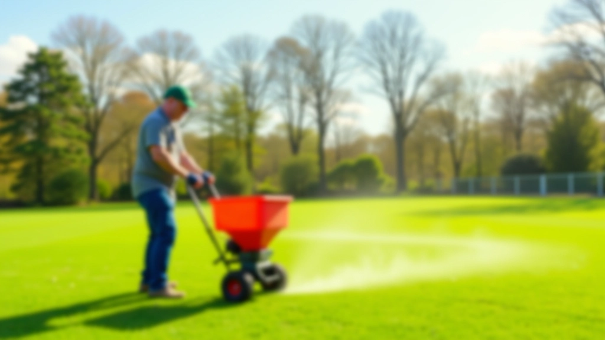
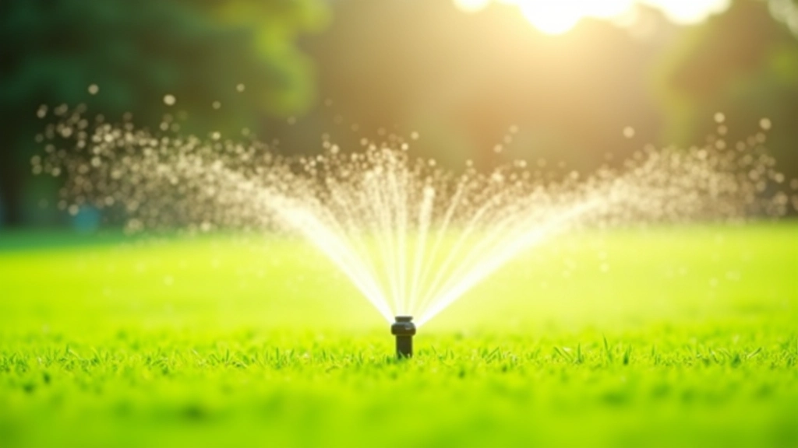
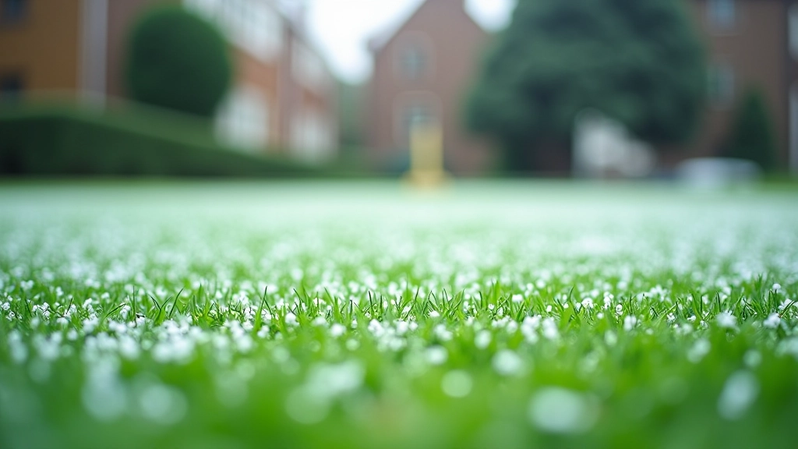

تحليل التربة والتسوية: الخطوة الأولى الصحيحة
فهم خصائص التربة واختبارها ضروري. نتناول كيفية قراءة نتائج التحليل واستخدامها لتحسين الملعب.
اقرأ المزيدكل موسم يحمل متطلبات صيانة مختلفة. من التسميد إلى التهوية والتحكم بالأعشاب الضارة، نغطي جدول الصيانة الكامل للملاعب الخضراء.

الملعب الأخضر كائن حي. يتنفس، ينمو، ويحتاج إلى رعاية مختلفة طبقاً للفصل. في الربيع، تركز على النمو والتسميد. في الصيف، الري والحماية من الحرارة أساسيان. الخريف يتطلب تنظيفاً وتحضيراً للشتاء. والشتاء؟ هذا وقت الصيانة الوقائية.
الحقيقة أن معظم مشاكل الملاعب تحدث لأن المدراء لا يتابعون الجدول الموسمي. نحن هنا لتوضيح ما يجب فعله، ومتى بالضبط، وكيف تحقق النتائج بكفاءة.
التسميد المبكر والتهوية الخفيفة لتحفيز النمو الجديد
الري المنتظم وإدارة الحشائش الضارة والعناية بالحواف
التنظيف العميق والتسميد الثاني والتهوية القوية
الصيانة الوقائية والتخطيط للموسم القادم والحماية من الصقيع
الربيع هو وقت الانطلاق. درجات الحرارة ترتفع، الأمطار تأتي، والعشب يستيقظ من سباته الشتوي. لكن هذا لا يعني الاسترخاء. بل العكس تماماً.
ابدأ بتقييم الضرر الشتوي. هل هناك بقع مكتومة؟ هل الصرف يعمل بشكل صحيح؟ بعدها، قم بالتهوية الخفيفة لتحسين التهوية. في منتصف الربيع، طبق السماد الأول — اختر صيغة متوازنة مثل 10-10-10 أو أعلى بقليل من النيتروجين.
لا تنسَ إزالة الأعشاب الضارة المبكرة. تحكم بها الآن قبل أن تتكاثر. معظم المدراء يتجاهلون هذه الخطوة في الربيع ثم يندمون في الصيف.


الصيف قاسٍ على الملاعب الخضراء. الحرارة العالية، الجفاف، والإجهاد تتحد لإنشاء ظروف صعبة. هنا يتحدد الفارق بين ملعب جميل وآخر بني اللون.
الري هو المفتاح. لكن ليس أي ري — ري ذكي. أنت تريد رطوبة ثابتة بعمق 2 إلى 3 بوصات في التربة. غالباً ما يكون هذا يعني الري المبكر جداً في الصباح، قبل شروق الشمس مباشرة. هذا يقلل الفقدان بسبب التبخر ويعطي الجذور وقتاً لامتصاص الماء.
التحكم بالأعشاب الضارة حاسم في الصيف. تنبت الأعشاب بسرعة، خاصة في الفترات الرطبة. استخدم مبيدات عشبية آمنة واختر الاختيار اليدوي للبقع الصغيرة. والتسميد؟ قلل التطبيقات في ذروة الحرارة لتجنب إرهاق العشب.

الخريف يشعر بالهدوء، لكنه في الحقيقة أحد أكثر الفصول انشغالاً للصيانة. درجات الحرارة تنخفض، والأمطار تزداد، والعشب ينتقل إلى مرحلة نمو مختلفة.
ابدأ بتنظيف عميق. أزل الأوراق الساقطة — لا تتركها تتراكم وتسبب تعفناً. بعدها، قم بتهوية قوية. هذا يحسن التهوية في التربة ويساعد على امتصاص الماء. في أوائل الخريف، طبق السماد الثاني بتركيز أعلى من البوتاسيوم لتقوية الجذور قبل الشتاء.
الحشائش الضارة الخريفية مختلفة عن تلك الصيفية. تحتاج إلى استراتيجية مختلفة. ركز على السيطرة الثقافية — التسميد الصحيح والري المناسب يعطي العشب الجيد ميزة تنافسية.
هذا المقال هو معلومات تعليمية فقط وليس نصيحة قانونية أو متخصصة. الظروف تختلف حسب المناخ المحلي والتربة والميزانية. استشر متخصصاً في صيانة الملاعب المحترفين قبل تطبيق أي برنامج صيانة جديد.

الشتاء يوقف النمو، لكنه لا يوقف عملك. بل يغير أولوياتك. الآن تركز على الوقاية والحماية والتخطيط للعام القادم.
تأكد من الصرف الجيد. الماء الراكد يسبب تعفناً وأمراضاً فطرية. إذا كان لديك ملعب في منطقة باردة جداً، فكر في الحماية من الصقيع. بعض المدراء يستخدمون غطاءات شتوية خاصة للحماية من التأثيرات القاسية. وفي الشتاء الخفيف، قد تحتاج فقط إلى التأكد من عدم الإفراط في الري.
هذا أيضاً الوقت المثالي للتخطيط. راجع ما نجح وما لم ينجح هذا العام. هل كانت مشاكل تصريف؟ هل احتجت إلى سماد أكثر؟ هل الأعشاب الضارة كانت مشكلة حقيقية؟ اكتب ملاحظات الآن، واستخدمها لتحسين خطتك للربيع المقبل.
اكتشف المزيد عن كيفية تحضير ملعبك من البداية، من اختيار العشب الصحيح إلى تصميم أنظمة الري الفعالة.
استكشف جميع الأدلة